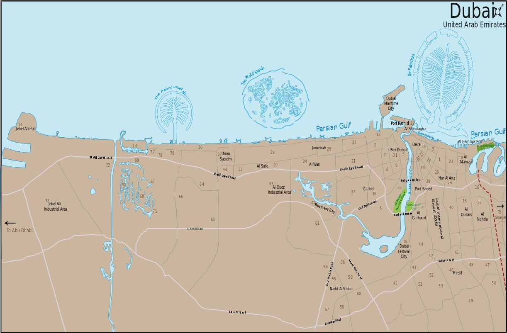

Localizacion
El emirato de Dubái está situado en la costa del golfo Pérsico de los Emiratos Árabes Unidos y tiene una altura media aproximada de 11 msnm.8 3 Limita al sur con el emirato de Abu Dabi, con el de Sharjah por el noreste y con el Sultanato de Omán por el sureste, a través del exclave de Hatta que también hace frontera con los emiratos de Ajmán por el oeste y de Ras al-Jaima por el norte. El golfo baña la costa oeste de Dubái.8 Tiene una superficie de 4114 km²,2 una importante expansión —debido a las reclamaciones sobre su soberanía en el mar—, ya que en sus inicios contaba con 3885 km².102 El Khawr Dubayy es un entrante de agua salada que atraviesa la ciudad en dirección noreste-suroeste.8 En la sección este de la capital del emirato se encuentra la localidad de Deira, la cual limita con el emirato de Sharjah en el este y con la localidad de Al Aweer en el sur. En Deira se encuentran el Aeropuerto Internacional de Dubái al sur y la Palma Deira en el norte, en la costa del golfo Pérsico. Gran parte del auge inmobiliario de Dubái se concentra al oeste del Khawr Dubayy, en la parte costera de Jumeirah. Los puertos de Rashid y Jebel Ali, así como el Burj Al Arab, la Palma Jumeirah y algunos puertos libres tales como el Business Bay, están localizados en ese mismo sector.
Dubai es la capital de uno de los siete Emiratos que conforman los Emiratos Árabes Unidos. Dónde queda Dubai es una pregunta que nos hemos hecho muchos en alguna ocasión, el motivo es porque cuando éramos pequeños no nos lo enseñaron en clase de Geografía. Debido a que Dubai está creciendo como destino turístico, muchas personas antes de ir allí quieren saber dónde queda Dubai. Aquí tienes ofertas de hoteles en Dubai a buen precio y como es lógico de mucho lujo.